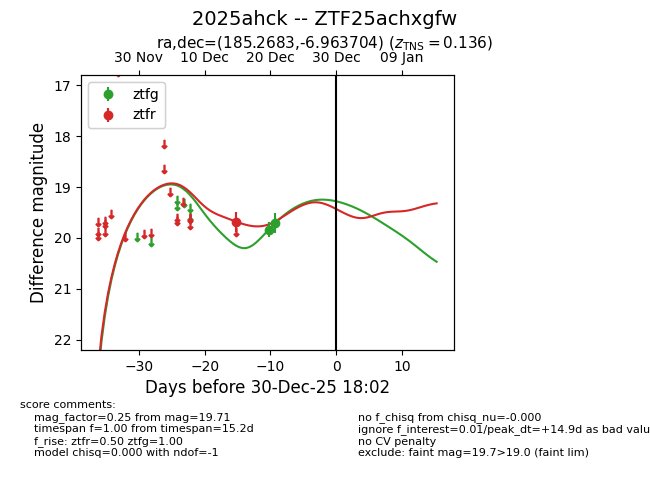
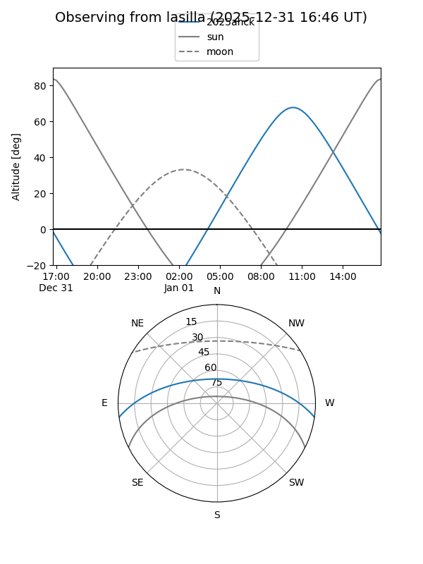
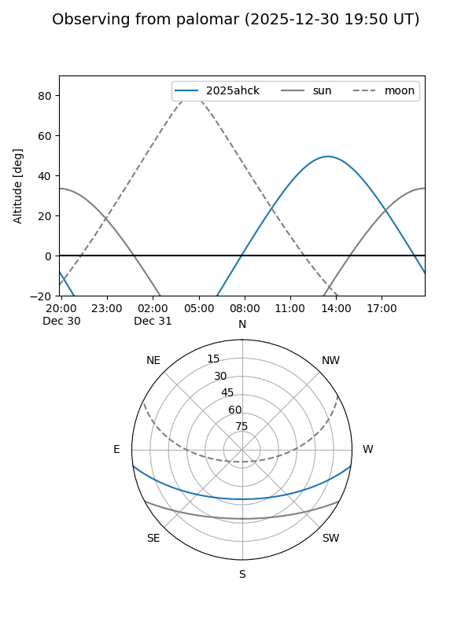
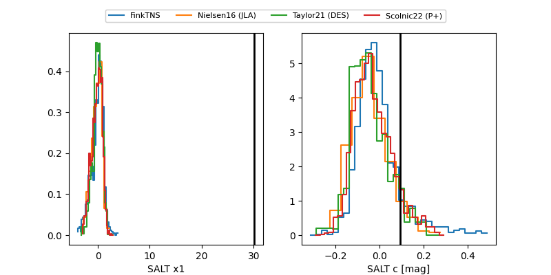

2025ahck
Target 2025ahck at 2025-12-20 14:19
Aliases and brokers:
FINK: fink-portal.org/ZTF25achxgfw
Lasair: lasair-ztf.lsst.ac.uk/objects/ZTF25achxgfw
ALeRCE: alerce.online/object/ZTF25achxgfw
TNS: wis-tns.org/object/2025ahck
YSE: ziggy.ucolick.org/yse/transient_detail/2025ahck
alt names
ZTF25achxgfw (ztf,fink_ztf)
2025ahck (tns,yse)
Coordinates:
equatorial (ra, dec) = 185.2683,-6.96370
equatorial (HMS+DMS) = 12:21:04.39,-06:57:49.33
galactic (l, b) = (289.6743,+55.12451)
Flags:
Photometry:
last ztfg=19.84, ztfr=19.68
1 ztfg, 1 ztfr detections
Lightcurve

Visibility


Additional plots
